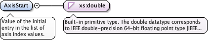
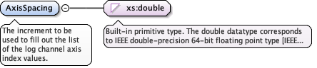

Value of the initial entry in the list of axis index values.
Diagram

Type
xs:double
Properties
content
simple
minOccurs
1
maxOccurs
1
Source
<xs:element name="AxisStart" type="xs:double" minOccurs="1" maxOccurs="1"><xs:annotation><xs:documentation>Value of the initial entry in the list of axis index values.</xs:documentation></xs:annotation></xs:element>
The increment to be used to fill out the list of the log channel axis index values.
Diagram

Type
xs:double
Properties
content
simple
minOccurs
1
maxOccurs
1
Source
<xs:element name="AxisSpacing" type="xs:double" minOccurs="1" maxOccurs="1"><xs:annotation><xs:documentation>The increment to be used to fill out the list of the log channel axis index values.</xs:documentation></xs:annotation></xs:element>
<xs:element name="AxisCount" type="eml:PositiveLong" minOccurs="1" maxOccurs="1"><xs:annotation><xs:documentation>The count of elements along this axis of the array.</xs:documentation></xs:annotation></xs:element>
<xs:element name="AxisName" type="eml:String64" minOccurs="0" maxOccurs="1"><xs:annotation><xs:documentation>The name of the array axis.</xs:documentation></xs:annotation></xs:element>
<xs:element name="AxisPropertyKind" type="eml:String64" minOccurs="1" maxOccurs="1"><xs:annotation><xs:documentation>The property type by which the array axis is classified. Like "measured depth" or "elapsed time".</xs:documentation></xs:annotation></xs:element>
<xs:element name="AxisUom" type="eml:UnitOfMeasureExt" minOccurs="1" maxOccurs="1"><xs:annotation><xs:documentation>A string representing the units of measure of the axis values.</xs:documentation></xs:annotation></xs:element>
Complex Type witsml:LogChannelAxis
Namespace
http://www.energistics.org/energyml/data/witsmlv2
Annotations
Metadata by which the array structure of a compound value is defined. It defines one axis of an array type used in a log channel.
A unique identifier for an instance of a log channel axis
Source
<xs:complexType name="LogChannelAxis"><xs:annotation><xs:documentation>Metadata by which the array structure of a compound value is defined. It defines one axis of an array type used in a log channel.</xs:documentation></xs:annotation><xs:sequence><xs:element name="AxisStart" type="xs:double" minOccurs="1" maxOccurs="1"><xs:annotation><xs:documentation>Value of the initial entry in the list of axis index values.</xs:documentation></xs:annotation></xs:element><xs:element name="AxisSpacing" type="xs:double" minOccurs="1" maxOccurs="1"><xs:annotation><xs:documentation>The increment to be used to fill out the list of the log channel axis index values.</xs:documentation></xs:annotation></xs:element><xs:element name="AxisCount" type="eml:PositiveLong" minOccurs="1" maxOccurs="1"><xs:annotation><xs:documentation>The count of elements along this axis of the array.</xs:documentation></xs:annotation></xs:element><xs:element name="AxisName" type="eml:String64" minOccurs="0" maxOccurs="1"><xs:annotation><xs:documentation>The name of the array axis.</xs:documentation></xs:annotation></xs:element><xs:element name="AxisPropertyKind" type="eml:String64" minOccurs="1" maxOccurs="1"><xs:annotation><xs:documentation>The property type by which the array axis is classified. Like "measured depth" or "elapsed time".</xs:documentation></xs:annotation></xs:element><xs:element name="AxisUom" type="eml:UnitOfMeasureExt" minOccurs="1" maxOccurs="1"><xs:annotation><xs:documentation>A string representing the units of measure of the axis values.</xs:documentation></xs:annotation></xs:element></xs:sequence><xs:attribute name="uid" use="required" type="eml:String64"><xs:annotation><xs:documentation>A unique identifier for an instance of a log channel axis</xs:documentation></xs:annotation></xs:attribute></xs:complexType>
<xs:attribute name="uid" use="required" type="eml:String64"><xs:annotation><xs:documentation>A unique identifier for an instance of a log channel axis</xs:documentation></xs:annotation></xs:attribute>